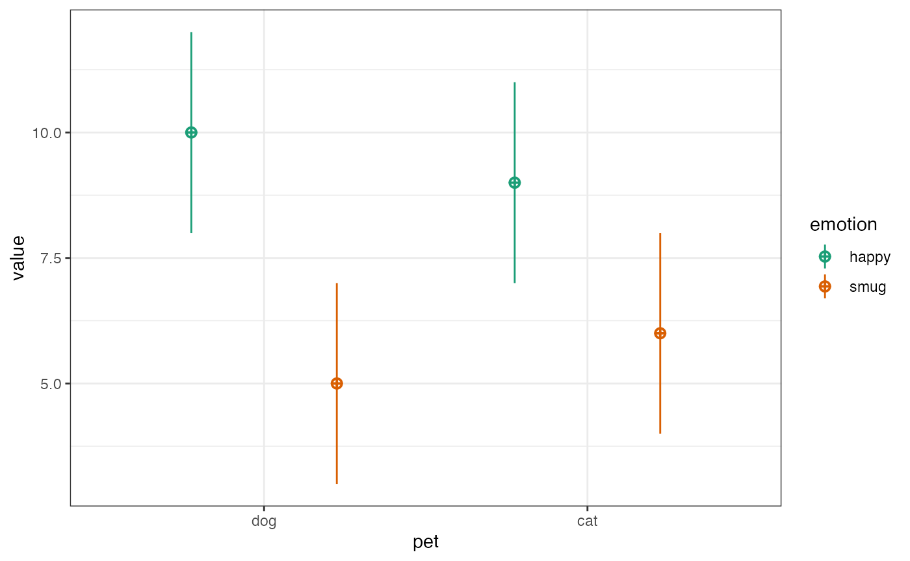

suppressPackageStartupMessages({
library(scienceverse)
library(faux)
library(tidyr)
library(dplyr)
library(ggplot2)
})First, I use the sim_design() function from faux to
visualise the design for my proposed study. I’m simulating 30 dog owners
with average happiness score of 10 and an average smugness score of 5,
and 30 cat owners with an average happiness score of 9 and an average
smugness score of 6. Since all have an SD of 2, these are effect sizes
of d = 0.5.
simdat <- sim_design(
between = list(pet = c("dog", "cat")),
within = list(emotion = c("happy", "smug")),
n = 30, # in each between-subject cell
mu = c(10, 5, 9, 6),
sd = 2
)
I can then use this simulated data to plan my analyses.
I’ll use a one-sided, two-sample t-test against a mu of 0 to test if my hypothesis that dog owners are happier than cat owners is corroborated
dog_happy <- simdat$happy[simdat$pet == "dog"]
cat_happy <- simdat$happy[simdat$pet == "cat"]
t.test(dog_happy, cat_happy, mu = 0,
alternative = "greater")
#>
#> Welch Two Sample t-test
#>
#> data: dog_happy and cat_happy
#> t = 2.4711, df = 53.854, p-value = 0.008333
#> alternative hypothesis: true difference in means is greater than 0
#> 95 percent confidence interval:
#> 0.4669045 Inf
#> sample estimates:
#> mean of x mean of y
#> 10.444280 8.997448I’ll use a one-sided, two-sample t-test against a mu of 0.2 (my smallest effect size of interest; SESOI) to assess falsification of my hypothesis.
dog_happy <- simdat$happy[simdat$pet == "dog"]
cat_happy <- simdat$happy[simdat$pet == "cat"]
t.test(dog_happy, cat_happy, mu = 0.2,
alternative = "less")
#>
#> Welch Two Sample t-test
#>
#> data: dog_happy and cat_happy
#> t = 2.1295, df = 53.854, p-value = 0.9811
#> alternative hypothesis: true difference in means is less than 0.2
#> 95 percent confidence interval:
#> -Inf 2.42676
#> sample estimates:
#> mean of x mean of y
#> 10.444280 8.997448I’ll use a one-sided, two-sample t-test against a mu of 0 to test if my hypothesis that cat owners are smugger than dog owners is corroborated.
dog_smug <- simdat$smug[simdat$pet == "dog"]
cat_smug <- simdat$smug[simdat$pet == "cat"]
t.test(cat_smug, dog_smug, mu = 0,
alternative = "greater")
#>
#> Welch Two Sample t-test
#>
#> data: cat_smug and dog_smug
#> t = 1.7868, df = 52.936, p-value = 0.03985
#> alternative hypothesis: true difference in means is greater than 0
#> 95 percent confidence interval:
#> 0.06651642 Inf
#> sample estimates:
#> mean of x mean of y
#> 6.035758 4.980895I’ll use a one-sided, two-sample t-test against a mu of 0.2 (my smallest effect size of interest; SESOI) to assess falsification of my hypothesis.
dog_smug <- simdat$smug[simdat$pet == "dog"]
cat_smug <- simdat$smug[simdat$pet == "cat"]
t.test(cat_smug, dog_smug, mu = 0.2,
alternative = "less")
#>
#> Welch Two Sample t-test
#>
#> data: cat_smug and dog_smug
#> t = 1.448, df = 52.936, p-value = 0.9232
#> alternative hypothesis: true difference in means is less than 0.2
#> 95 percent confidence interval:
#> -Inf 2.043209
#> sample estimates:
#> mean of x mean of y
#> 6.035758 4.980895
study <- study("Simple Simulation Demo") %>%
add_hypothesis("happy", "Dog owners will be happier than cat owners.") %>%
add_analysis("happy_main", {
dog_happy <- pet_data$happy[pet_data$pet == "dog"]
cat_happy <- pet_data$happy[pet_data$pet == "cat"]
t.test(dog_happy, cat_happy, mu = 0, alternative = "greater")
}) %>%
add_criterion("happy_c", "p.value", "<", 0.05) %>%
add_analysis("happ_equiv", {
dog_happy <- pet_data$happy[pet_data$pet == "dog"]
cat_happy <- pet_data$happy[pet_data$pet == "cat"]
t.test(dog_happy, cat_happy, mu = 0.2, alternative = "less")
}) %>%
add_criterion("happy_f", "p.value", "<", 0.05) %>%
add_eval("corroboration", "happy_c", "The hypothesis will be corroborated if dog owners are significantly happier than cat owners.") %>%
add_eval("falsification", "happy_f", "The hypothesis will be falsified if dog owners are significantly less than 0.2 units happier than cat owners.")Add a second hypothesis, with all associated analyses, criteria, and evaluation rules.
study <- study %>%
add_hypothesis("smug", "Cat owners will be smugger than dog owners.") %>%
add_analysis("smug_main", {
dog_smug <- pet_data$smug[pet_data$pet == "dog"]
cat_smug <- pet_data$smug[pet_data$pet == "cat"]
t.test(cat_smug, dog_smug, mu = 0, alternative = "greater")
}) %>%
add_criterion("smug_c", "p.value", "<", 0.05) %>%
add_analysis("smug_equiv", {
dog_smug <- pet_data$smug[pet_data$pet == "dog"]
cat_smug <- pet_data$smug[pet_data$pet == "cat"]
t.test(cat_smug, dog_smug, mu = 0.2, alternative = "less")
}) %>%
add_criterion("smug_f", "p.value", "<", 0.05) %>%
add_eval("corroboration", "smug_c", "The hypothesis will be corroborated if cat owners are significantly smugger than dog owners.") %>%
add_eval("falsification", "smug_f", "The hypothesis will be falsified if cat owners are significantly less than 0.2 units smugger than dog owners.")Now we can simulate a dataset. Make sure to give it the same
data_id that you used to reference it in the analysis.
simstudy <- add_sim_data(
study,
data_id = "pet_data",
between = list(pet = c("dog", "cat")),
within = list(emotion = c("happy", "smug")),
n = 30, # in each between-subject cell
mu = c(10, 5, 9, 6),
sd = 2
) %>%
study_analyse()
#> id set to dataType string
#> pet set to dataType string
#> happy set to dataType float
#> smug set to dataType float
#> Hypothesis happy: Dog owners will be happier than cat owners.
#>
#> Criterion happy_c:
#> * p.value < 0.05 is FALSE
#> * p.value = 0.131
#>
#> Criterion happy_f:
#> * p.value < 0.05 is FALSE
#> * p.value = 0.774
#>
#> Conclusion: inconclusive
#> * Corroborate (happy_c): FALSE
#> * Falsify (happy_f): FALSE
#>
#> Hypothesis smug: Cat owners will be smugger than dog owners.
#>
#> Criterion smug_c:
#> * p.value < 0.05 is FALSE
#> * p.value = 0.201
#>
#> Criterion smug_f:
#> * p.value < 0.05 is FALSE
#> * p.value = 0.687
#>
#> Conclusion: inconclusive
#> * Corroborate (smug_c): FALSE
#> * Falsify (smug_f): FALSEUse the study_power function to run the analyses on each
simulated dataset and return the percent of datasets that lead to each
possible conclusion for each hypothesis. You can also increase the
number of replications in the simulation to calculate the power of your
study. This is especially helpful for studies with complex analyses or
evaluation criteria.
simstudy <- study_power(simstudy, rep = 1000)
#> Simulating Datasets...
#> Running Analyses...
#> Evaluating Hypotheses...
#> Hypothesis happy
#> corroboration: 62.3%
#> falsification: 0.1%
#> inconclusive: 37.6%
#> Hypothesis smug
#> corroboration: 59.4%
#> falsification: 0.1%
#> inconclusive: 40.5%Use the get_power function to get the results in a list
format. Set values to TRUE to get the
individual values for the analysis results.
power <- get_power(simstudy, values = TRUE)
# get power for each hypothesis
# corroboration, falsification, or inconclusive
happy_power <- power$power$happy
smug_power <- power$power$smug
# get values for specific analysis results
happy_c <- power$results$happy_main$p.value
smug_c <- power$results$smug_main$p.value